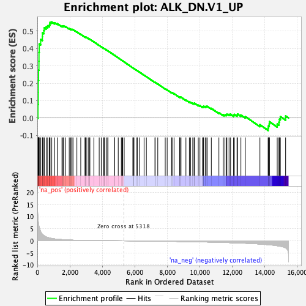
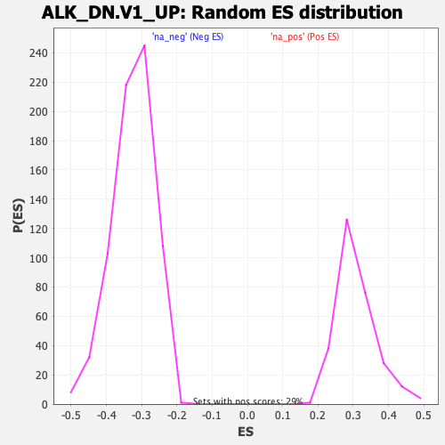

| | | Dataset | DE_genes |
| Phenotype | NoPhenotypeAvailable |
| Upregulated in class | na_pos |
| GeneSet | ALK_DN.V1_UP |
| Enrichment Score (ES) | 0.5529211 |
| Normalized Enrichment Score (NES) | 1.7901477 |
| Nominal p-value | 0.0 |
| FDR q-value | 0.002960043 |
| FWER p-Value | 0.021 |
Table: GSEA Results Summary

Fig 1: Enrichment plot: ALK_DN.V1_UP
Profile of the Running ES Score & Positions of GeneSet Members on the Rank Ordered List
| PROBE | GENE SYMBOL | GENE_TITLE | RANK IN GENE LIST | RANK METRIC SCORE | RUNNING ES | CORE ENRICHMENT | | 1 | AQP9 | | | 38 | 9.555 | 0.0786 | Yes |
| 2 | TFEC | | | 56 | 8.248 | 0.1474 | Yes |
| 3 | KRT81 | | | 57 | 8.222 | 0.2171 | Yes |
| 4 | TREM1 | | | 78 | 7.063 | 0.2757 | Yes |
| 5 | CCL19 | | | 99 | 6.189 | 0.3269 | Yes |
| 6 | CSTA | | | 102 | 6.090 | 0.3784 | Yes |
| 7 | CHI3L1 | | | 116 | 5.713 | 0.4260 | Yes |
| 8 | SLAMF7 | | | 206 | 3.748 | 0.4520 | Yes |
| 9 | IL1R2 | | | 311 | 2.680 | 0.4680 | Yes |
| 10 | SAA1 | | | 314 | 2.654 | 0.4904 | Yes |
| 11 | STEAP4 | | | 401 | 2.205 | 0.5035 | Yes |
| 12 | VNN2 | | | 427 | 2.041 | 0.5191 | Yes |
| 13 | BST1 | | | 547 | 1.591 | 0.5249 | Yes |
| 14 | CCNK | | | 638 | 1.390 | 0.5308 | Yes |
| 15 | ADAM12 | | | 740 | 1.214 | 0.5345 | Yes |
| 16 | AIF1 | | | 771 | 1.159 | 0.5424 | Yes |
| 17 | GDF15 | | | 783 | 1.135 | 0.5513 | Yes |
| 18 | CHAC1 | | | 889 | 0.993 | 0.5529 | Yes |
| 19 | PSAT1 | | | 1066 | 0.783 | 0.5481 | No |
| 20 | UNC13A | | | 1229 | 0.658 | 0.5431 | No |
| 21 | SLC1A3 | | | 1517 | 0.511 | 0.5288 | No |
| 22 | CCL20 | | | 1581 | 0.479 | 0.5288 | No |
| 23 | SCN9A | | | 1617 | 0.466 | 0.5304 | No |
| 24 | KYNU | | | 1739 | 0.412 | 0.5260 | No |
| 25 | SLC7A11 | | | 1965 | 0.336 | 0.5142 | No |
| 26 | MPO | | | 2055 | 0.309 | 0.5111 | No |
| 27 | PRDM1 | | | 2120 | 0.292 | 0.5094 | No |
| 28 | CEBPG | | | 2139 | 0.285 | 0.5106 | No |
| 29 | FOXP3 | | | 2198 | 0.267 | 0.5091 | No |
| 30 | FLVCR2 | | | 2436 | 0.218 | 0.4955 | No |
| 31 | FJX1 | | | 2674 | 0.181 | 0.4816 | No |
| 32 | GNAT2 | | | 2939 | 0.145 | 0.4657 | No |
| 33 | CES1P1 | | | 2948 | 0.145 | 0.4664 | No |
| 34 | CH25H | | | 2998 | 0.140 | 0.4644 | No |
| 35 | TTLL2 | | | 3010 | 0.139 | 0.4648 | No |
| 36 | ENTPD3 | | | 3134 | 0.127 | 0.4579 | No |
| 37 | MTHFD2 | | | 3210 | 0.121 | 0.4541 | No |
| 38 | XBP1 | | | 3237 | 0.119 | 0.4534 | No |
| 39 | NNAT | | | 3480 | 0.100 | 0.4385 | No |
| 40 | SCN1A | | | 3810 | 0.081 | 0.4177 | No |
| 41 | BEGAIN | | | 3936 | 0.074 | 0.4102 | No |
| 42 | PYY2 | | | 4080 | 0.066 | 0.4015 | No |
| 43 | PIK3CG | | | 4110 | 0.064 | 0.4001 | No |
| 44 | DLX6 | | | 4144 | 0.062 | 0.3985 | No |
| 45 | PNOC | | | 4268 | 0.055 | 0.3910 | No |
| 46 | AQP7 | | | 4340 | 0.051 | 0.3868 | No |
| 47 | STMN2 | | | 4347 | 0.050 | 0.3868 | No |
| 48 | PDZD7 | | | 4764 | 0.028 | 0.3600 | No |
| 49 | OLFML3 | | | 4765 | 0.028 | 0.3602 | No |
| 50 | FMO1 | | | 4983 | 0.017 | 0.3462 | No |
| 51 | FBXL8 | | | 5173 | 0.008 | 0.3340 | No |
| 52 | CHST8 | | | 5215 | 0.006 | 0.3314 | No |
| 53 | HLA-DMB | | | 5259 | 0.003 | 0.3286 | No |
| 54 | MT1H | | | 5350 | -0.002 | 0.3227 | No |
| 55 | ANGPT2 | | | 5882 | -0.031 | 0.2884 | No |
| 56 | BMPR1B | | | 5928 | -0.034 | 0.2858 | No |
| 57 | NTRK1 | | | 5951 | -0.036 | 0.2847 | No |
| 58 | GDF5 | | | 6133 | -0.048 | 0.2733 | No |
| 59 | ZNF639 | | | 6156 | -0.050 | 0.2723 | No |
| 60 | CXCR5 | | | 6288 | -0.058 | 0.2643 | No |
| 61 | CARD9 | | | 6574 | -0.078 | 0.2464 | No |
| 62 | CLSPN | | | 6716 | -0.089 | 0.2379 | No |
| 63 | CATSPERG | | | 7242 | -0.131 | 0.2049 | No |
| 64 | SPP1 | | | 7256 | -0.132 | 0.2051 | No |
| 65 | SLC12A8 | | | 7417 | -0.146 | 0.1960 | No |
| 66 | TDO2 | | | 7877 | -0.186 | 0.1677 | No |
| 67 | MLC1 | | | 7996 | -0.197 | 0.1617 | No |
| 68 | LTC4S | | | 8268 | -0.226 | 0.1459 | No |
| 69 | ASNS | | | 8300 | -0.230 | 0.1459 | No |
| 70 | CFTR | | | 8420 | -0.242 | 0.1402 | No |
| 71 | SLC1A5 | | | 8767 | -0.282 | 0.1200 | No |
| 72 | IL6 | | | 8782 | -0.284 | 0.1215 | No |
| 73 | STC2 | | | 8848 | -0.292 | 0.1198 | No |
| 74 | DDIT4 | | | 9151 | -0.329 | 0.1029 | No |
| 75 | SLC6A9 | | | 9363 | -0.354 | 0.0922 | No |
| 76 | VEGFC | | | 9439 | -0.365 | 0.0904 | No |
| 77 | FAP | | | 9572 | -0.384 | 0.0850 | No |
| 78 | CBS | | | 9656 | -0.397 | 0.0830 | No |
| 79 | ADAM28 | | | 9676 | -0.400 | 0.0852 | No |
| 80 | CA2 | | | 9913 | -0.434 | 0.0735 | No |
| 81 | GNA15 | | | 10013 | -0.448 | 0.0708 | No |
| 82 | GALK1 | | | 10174 | -0.474 | 0.0644 | No |
| 83 | CXCL5 | | | 10222 | -0.480 | 0.0654 | No |
| 84 | CTH | | | 10244 | -0.483 | 0.0682 | No |
| 85 | MRAS | | | 10358 | -0.499 | 0.0650 | No |
| 86 | FBXW4P1 | | | 10398 | -0.505 | 0.0668 | No |
| 87 | EREG | | | 10458 | -0.513 | 0.0673 | No |
| 88 | RRAS | | | 10715 | -0.555 | 0.0553 | No |
| 89 | CA3 | | | 11182 | -0.632 | 0.0304 | No |
| 90 | B3GALT4 | | | 11454 | -0.688 | 0.0186 | No |
| 91 | RBM17 | | | 11554 | -0.710 | 0.0181 | No |
| 92 | PCK2 | | | 11635 | -0.730 | 0.0191 | No |
| 93 | THAP3 | | | 11674 | -0.737 | 0.0229 | No |
| 94 | NOD2 | | | 11807 | -0.763 | 0.0208 | No |
| 95 | DECR2 | | | 11901 | -0.785 | 0.0214 | No |
| 96 | LYL1 | | | 12084 | -0.824 | 0.0165 | No |
| 97 | ENPP2 | | | 12132 | -0.837 | 0.0206 | No |
| 98 | BDKRB2 | | | 12299 | -0.877 | 0.0172 | No |
| 99 | SLC7A5 | | | 12329 | -0.885 | 0.0228 | No |
| 100 | VEGFA | | | 12537 | -0.937 | 0.0173 | No |
| 101 | ANGPTL4 | | | 12808 | -1.014 | 0.0083 | No |
| 102 | PYGB | | | 13708 | -1.335 | -0.0389 | No |
| 103 | ETV1 | | | 14214 | -1.607 | -0.0581 | No |
| 104 | NFKBIL1 | | | 14233 | -1.622 | -0.0456 | No |
| 105 | CCR7 | | | 14279 | -1.650 | -0.0345 | No |
| 106 | TRIB3 | | | 14295 | -1.657 | -0.0214 | No |
| 107 | FAM110D | | | 14774 | -2.042 | -0.0352 | No |
| 108 | ARHGAP4 | | | 14878 | -2.138 | -0.0238 | No |
| 109 | VSTM4 | | | 14907 | -2.175 | -0.0072 | No |
| 110 | EPAS1 | | | 14969 | -2.267 | 0.0081 | No |
| 111 | TBX2 | | | 15291 | -2.893 | 0.0117 | No |
Table: GSEA details [plain text format]

Fig 2: ALK_DN.V1_UP: Random ES distribution
Gene set null distribution of ES for ALK_DN.V1_UP